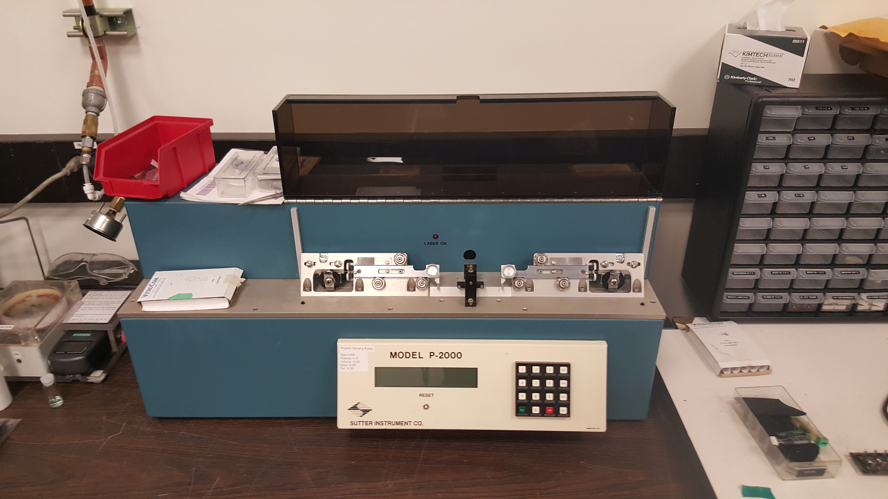

I am currently a physics research lab intern at Portland State University, working on fabricating nanoscale aperture probe tips for use in an Atomic Force Microscope (AFM). In order to make such a small tip, fused quartz capillaries are heated and pulled, using a Sutter Instruments P-2000 Laser-Based Micropipette Puller.
